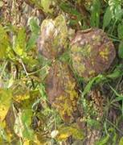
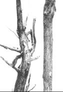

| Home |
| SOYBEAN |
| Major Diseases |
| 1. Dry root rot |
| 2. Wilt |
| 3. Leaf Spot |
| 4. Mosai |
| Questions |
| Download Notes |
SOYBEAN DRY ROOT DISEASE
Dry root rot - Macrophomina phaseolina
Symptoms
The disease symptom starts initially with yellowing and drooping of the leaves. The leaves later fall off and the plant dies with in week. Dark brown lesions are seen on the stem at ground level and bark shows shredding symptom. The affected plants can be easily pulled out leaving dried, rotten root portions in the ground. The rotten tissues of stem and root contain a large number of black minute sclerotia.
|  |  |
Symptoms |
|
Pathogen
The fungus produces dark brown, septate mycelium with constrictions at hyphal branches. Minute, dark, round sclerotia in abundance. The fungus also produces dark brown, globose ostiolated pycnidia on the host tissues. The pycnidiospores are thin walled, hyaline, single celled and elliptical
Favourable conditions
- Day temperature of 30˚C
- Prolonged dry season followed by irrigation.
Disease cycle
The fungus survives in the infected debris and also as facultative parasite in soil. The primary spread is through seed-borne and soil-borne sclerotia. The secondary spread is through seed-borne and soil-borne sclerotia. The secondary spreads is through pycnidiospores which are air-borne.
Management
- Treat the seeds with Carbendazim or Thiram at 2 g/kg or pellet the seeds with Trichoderma virideat 4 g/kg or Pseudonomas fluorescens@ 10g/kg of seed.
- Apply farm yard manure or green leaf manure (Gliricidia maculata) at 10 t/ha or neem cake at 150 kg/ha.